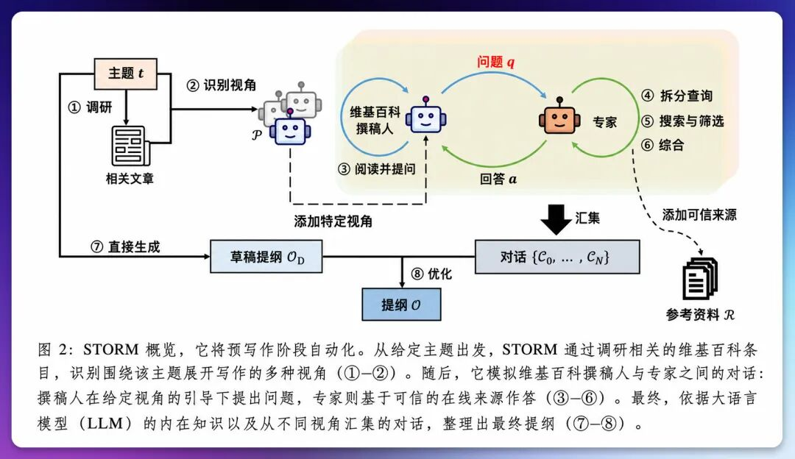

前段时间，我发现一个很严重的问题。
我每天超高强度的用 AI 输出工作、生活上的所有内容，但是我却几乎没有任何输入。
没有输入这件事，对我来说，是会让我焦虑的一个问题，因为这个代表着我只是一味的释放价值，而没有持续进步。
所以我决定，必须有计划的重启我的学习计划。
目前已经持续了一周，给大家看看我学习的内容。以上的这些领域，基本上我已经达到可以和专业的人交谈的状态。
07-16: AI外贸中市场调研与客户开发的方法
07-15: 相关性与因果关系的思维关联分析
07-14: Anthropic Skills 核心经验
07-13: RAG 所有变体及其深入研究方向
07-12: 非理性决策的心理学成因
而且经过这段时间我越来越确定，
干活省的时间是线性的，省半小时就是半小时。学东西的速度是复利的，持续会带来个人的巨大进步。
而学习速度的差距，不在于有没有用 AI，而在学习有没有结构。所以我也整理了一套用 AI 闭环（采用 Claude、Codex、Workbuddy 等等都可以）的学习方法。这里一并整理好给大家。
这套方法的来源有两个：
一个是 X 博主 Rahul（@sairahul1）的帖子：用 Claude 十倍速学习任何知识。
Rahul 帖子里最重要的是这句：
大多数人只是随意提问，感觉在学习，一周后什么都不记得。因为真正的学习需要四个要素，一条路径，一次测试，一次压缩，一个反馈循环。
另一个就是 STORM 学习法，
这是斯坦福论文提出的，发在国际顶会 NAACL 上，干的就是一件事：
论文里说一份博士级调研，人工要 40 到 60 个小时读资料、理线索，它用检索加多视角提问，把这个过程压缩成几分钟。
效果大幅超过了传统方法。

这个核心的思路比较重要，我简述一下：
我们大多数情况下问 AI“给我讲讲 X”，得到的永远是大多数人的观点，最常见的框架，最表面的信息。
可一个领域真正的样子，从来不长在大多数人的观点里。而是，天天上手干活的实践者、读遍论文的学者、觉得主流方向全错了的怀疑者、盯着钱往哪流的经济学家、见过类似剧情怎么收场的历史学家。
这五种人看同一个东西，看到的根本不是同一个东西。
而这些视角的差异，才是学习的核心。
我最近的学习，根据自己的经验融合了以上两套方法，从学习的闭环逻辑整理了从学习、深化、记忆、回顾的整个流程。
一共十步，每步一段提示词，按顺序执行。
如果你也想尝试一下，欢迎参与学习小组～
现在开始。
第 1 步 · 五视角 STORM
请模拟 5 位不同的专家，从各自的视角分析这个主题：
1. 实践者：每天跟这东西打交道的人。
他们知道哪些学者不知道的事？哪些实际情况总是被忽略？
2. 学者：研究这个领域多年的人。
同行评审的证据到底说了什么？证据在哪些地方和大众认知相反？
3. 怀疑者：认为主流观点有问题的人。
最强的反方论点是什么？支持者们刻意忽略了哪些证据？
4. 经济学家：盯着钱流向的人。
谁在从当前的叙事里获利？哪些利益在影响这个领域的结论？
5. 历史学家：见过类似规律的人。
历史上有什么相似的先例？那些先例最后是怎么收场的？
每个视角请给我：
- 两句话说清他的核心立场
- 支持他观点的最强证据
- 一件只有他会告诉我、其他视角绝不会提的事
跑完这一步，你会拿到五份完全不同的解读。
实践者告诉你学术界脱离实际的地方，怀疑者反手拆实践者的台，经济学家把大家不好意思说的利益关系摆到桌面上，历史学家告诉你，这个问题以前上演过，后来是怎么收场的。
第 2 步 · 矛盾图谱
五个视角拿到手，下一步是让它们互相质疑。
这一步大多数人会跳过，但它恰恰是浅调研和深调研的分水岭。
一个领域里比较深的认知，往往就藏在几拨人吵得最凶的那个点上，我发现他们为什么吵搞明白了，理解一下子就下去一层。
哪些视角在直接冲突，各自的依据是什么；
谁的证据最强、谁的最弱、为什么；
哪一个问题一旦有答案，就能化解最大的矛盾；
所有视角都同意的是什么（这大概率是真的）；
没有任何视角提到的是什么（这可能是整个领域的盲区）。
这一步跑完有两个特别值钱的产出。
所有视角都同意的东西，大概率是真的，连对手都承认的事，你可以放心用。
所有视角都没提的东西，很可能是整个领域的盲区，有时候这反而是最大的发现。
第 3 步 · 综合简报
然后把前面所有东西，收拢成一份能用的简报。
一段话总结（讲给只有 60 秒的 CEO 听，要细节，不要标题党）；
5 个关键发现，按可靠性排序，标注哪些视角支持、哪些反对；
一个只有把 5 个视角放在一起才能看到的隐藏关联；
一条具体的行动建议（以我的角色，我该做什么不一样的事）；
一个前沿问题（它的答案会改变我们对这个主题的全部理解）。
这份简报的好处是，它不是任何一个单一视角能写出来的。角度全，矛盾会明确出来，每条结论的可信度也标了。
第 4 步 · 同行评审自检
下一步，很多人想不到：让 AI 给自己挑刺。
斯坦福团队自己也承认，STORM 有个已知短板，就是缺自我批判的环节，容易出现来源偏差、事实错配。
所以这里我增加了一步进行评审的过程。
给 5 个关键发现逐个打 1-10 的可靠性分，并解释理由；
你最没把握的是哪个结论，需要什么信息才能验证它；
哪个视角在综合时占的比重过大了；
有没有第 6 个视角是该加进来、加了会改变结论的；
如果一位斯坦福教授来评审这份简报，会打几分，会让我改什么。
前四步跑完，一个主题的图就开出来了。花的时间，大概也就是泡一壶茶的功夫。而它替你走过的，就是原来要在文献堆里泡几十个小时才理得出来的那些线索。
第 5 步 · 资源筛选
这时候就需要进行广度上的操作了。
资料收集。
这个我太熟了。收集、整理、吃灰，一气呵成！
收藏那一下是真快乐，感觉知识已经进脑子了。
必须解决这个问题。
Rahul 有一段提示词就是解决这个的。
他的说法我很认同：大多数学习者手里的资源早就够了，多到根本用不过来，时间全花在收集上，从来没真用过。
请你当一个只帮我省时间的策展人：
选出 5 个最值得用的资源（书、视频、课程、社区都行），
每个说清楚：它为什么比同类强、该怎么用（读/看/练）、
大概要花多久、我该从它身上拿走的一个关键点；
再告诉我哪些是被高估的、我该躲开的坑；
最后把这 5 个排成一条一周能走完的学习路径。
让它只给你 5 个，排好顺序，告诉你哪些是被高估的，再排一条一周走完的路。够了。
5 个能真用完就已经很不错了，收藏夹里那 500 个，就先让它们躺着吧。
到这儿，进门的事说完了。资源定了，基础有了，接下来才是这套闭环真正发力的地方：吃透它。
这里说一个我的认知：学新东西，最常见的问题就是跳级学。
基础没打牢就去啃高级材料，啃不动，觉得自己笨，放弃。其实多半就是顺序错了，跟聪明不聪明没多大关系。
教育心理学里有个概念我一直很喜欢，叫最近发展区，维果茨基提的。
大意是，一个人能学会的东西，永远长在“他已经会的”旁边一小步，你踮踮脚能够着的东西才学得会，隔太远的，看一百遍也就是个眼熟。
第 6 步 · 学习阶梯
请你扮演一位专家教师和技能教练，把【主题】分解为 5 个
清晰的难度级别，从完全初学者到自信的实践者。
每个级别包括：
1. 级别名称
2. 这个阶段我应该理解什么
3. 在这个级别上"掌握"是什么样子
4. 最需要重点关注的概念或技能
5. 一个证明我可以进入下一级别的里程碑
6. 一个动手练习或小型项目
7. 这个级别的学习者常犯的错误
8. 进入下一级别前的一个简单自测问题
按这个结构组织级别：
- 级别 1：完全初学者
- 级别 2：基本理解
- 级别 3：实际使用者
- 级别 4：问题解决者
- 级别 5：自信的实践者
解释保持实用、对初学者友好，专注于真正的进步。
这一步的作用就一个：让你永远知道自己站在第几级，下一步该到哪。
我自己的体会是，学东西最泄气的时候，往往就是不知道自己到哪儿了、还差多远的时候，有张阶梯在手里，这个问题就基本没了。
第 7 步 · 2 小时啃下核心 20%
阶梯排出来了，别急着从第一级慢慢爬。
大多数学科都有那么一小撮概念，撬动其他所有内容。先找到那 20%。
请先找出能带来 80% 实际效果的那 20% 的概念和技能，
解释它们为什么是核心；
然后排成 10 次课的学习计划，每次课包含：
学习目标、关键概念、一个动手练习、
一个推荐资源（最好免费）、完成后的预期结果；
每次课结束，给我 5 个复习题；
全部结束后，给我一个能证明我真的可以上手用的最终小项目。
10 次课，每次都有练习、有资源、有复习题，最后还有一个能证明你真的会用的小项目。
2 小时当然学不完一个领域，这个计划的目标，就是把“能上手干活”的那部分先拿下。
到这儿为止，都还是舒服的部分。
接下来这一步，是最不舒服的，也是我觉得最重要的。
看书、看视频、听 AI 讲，这些输入型的动作有个共同的毛病：它们让你“感觉”自己懂了。
那种懂来得太顺了，顺到你根本不会去怀疑它，到底是真懂了还是只看了个热闹，得真考一下才知道。
第 8 步 · 考到我崩溃
请你扮演一位严格但乐于助人的考官，
通过主动回忆找出我理解的边界。
从 10 个问题开始，一次只问一个。
规则：
1. 问题逐渐变难：第 1-3 题初级，第 4-6 题中级，
第 7-8 题高级，第 9-10 题专家级。
2. 一次只问一个问题，等我回答。
3. 每个回答之后，做四件事：
给我的答案打 0 到 10 分；
告诉我哪里答对了；
指出确切的差距、错误或薄弱点；
用简单的语言重新解释我漏掉的部分。
4. 如果我答得很弱，先追问一个问题，再进入下一题。
5. 如果我答得很好，稍微增加难度。
6. 最后给我：最终得分、我最强的领域、我最弱的领域、
一个简短的复习计划、5 个最终挑战题。
不要一次给我所有答案。让这像一场真实的学习面试。
这一步，我劝你挑个心情好的时候用。被它考到答不上来的滋味不太好受，但也只有那一下，你才知道自己之前的“懂”里，有多少是水分。
这背后其实是认知心理学里被验证过无数遍的一个效应，叫测试效应，英文叫 retrieval practice，检索练习。
我觉得很真实的是，从脑子里往外掏知识这个动作本身，比往脑子里塞知识，更能让知识记住。（费曼学习法也是这个逻辑）
你肯定有过考前抱佛脚、第二天反而记得特别牢的经历，就是这个机制，被这么考一遍，本身就是在学，不光是在测你到底会多少。
第 9 步 · 费曼循环
考出来的窟窿，用费曼循环补。
费曼那句话大家都听过：一个东西你没法讲给 12 岁的孩子听懂，你就还没真的懂它。
费曼技巧就四步：学习，教授，回顾，简化。学一遍，讲一遍，找出讲不清的地方回炉，再用更简单的话讲一遍。
请你当一个有耐心的学习伙伴：
先用简单的词、生活里的例子把它讲给我听，就当我 12 岁；
然后让我用自己的话复述一遍；
接着找出我复述里每一个含糊、跳步、绕不过去的地方，
只重新教这些部分；
再让我讲一遍。循环下去，
直到我的解释简单、准确、完整。
在我讲清楚之前，别进入新内容。
这部分就不多解释了，必须认真执行的一步。
第 10 步 · 一页速查表
最后一步最轻，但我用的频率可能反而最高。
人的脑子，记结构比记段落牢。学完的东西不压缩，就跟没打包的行李一样，要用的时候，满地找。
让我在要用它之前，花 5 分钟就能过完：
一句大白话定义；
最重要的概念、规则、公式或步骤，全用短条目，别用长段落；
3-5 个真实场景的例子；
新手最容易犯的错、最容易混淆的地方；
一份"上场前"检查清单；
最后加 5 个快问快答，测测我还记得多少。
面试前、开会前、要给别人讲之前，掏出来花 5 分钟扫一遍。就这么个小东西，特别好使。
十步，全给你了。
回头看一眼，它其实是一条完整的线：
1. 对于一个陌生领域，让观点打一架，压成简报，再让它自查一遍；
2. 然后只留 5 个资源，排出阶梯，用 2 小时先啃下核心的 20%；
3. 学完了，让考官把自己考到崩溃，讲不清的地方用费曼循环磨平；
4. 最后，压成一页速查表，随用随取。
一个闭环。
劝人开始学习这件事，真的不讨好。
我知道评论区一定又会出现：先收藏，吃灰去吧。
不过，我在查 STORM 资料的时候，我刷到过一篇转述它的文章，结尾说接下来 18 个月是关键窗口期，先掌握的人认知优势会被无限拉大。
这种话，我从来不太买账。方法好就是好，不需要拿“再不学就晚了”来吓人。学东西这事，什么时候开始都不晚。
晚的只有一种：一直收藏，一直不开始。
输出的活，AI 替我们干得够多了。也该轮到输入了。
接下来我会让自己先坚持 21 天的周期，如果你也想，欢迎加入一起 🎉
以上，既然看到这里了，
如果觉得不错，随手点个赞、在看、转发三连吧，
如果想第一时间收到推送，也可以给我个星标⭐～
谢谢你看我的文章
你的关注是我持续更新的动力～
我是谁
我是 AI大刘，北大毕业，大模型研究方向，腾讯犀牛鸟，先后在腾讯、百度的大模型研发部门。现在斜杠青年：给多家国企做AI顾问 \ OPC \ 研究员 \ 产品独立开发者 \ Vibe Coder